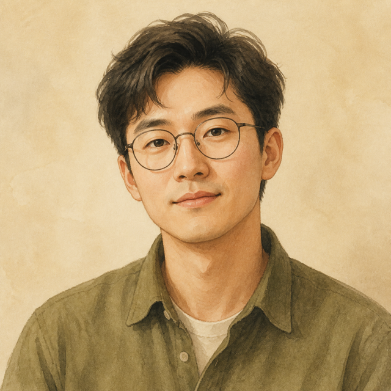
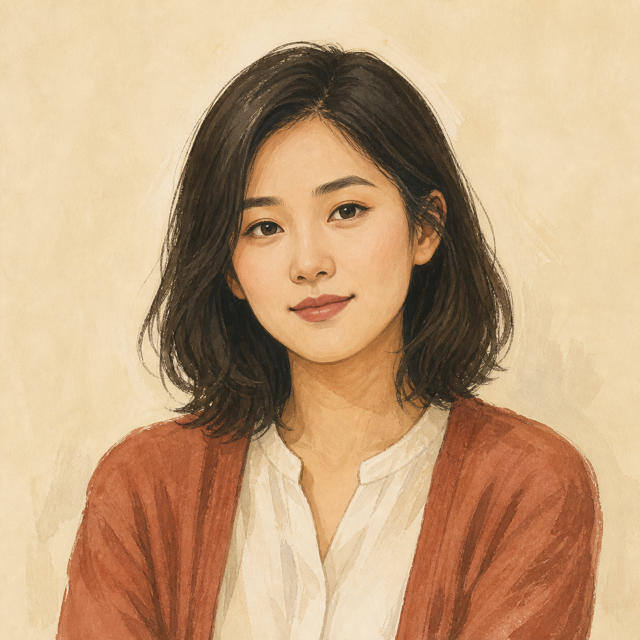
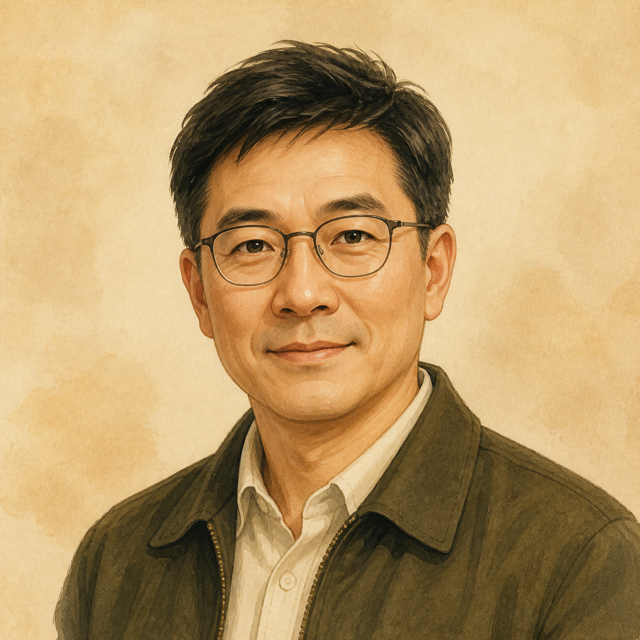
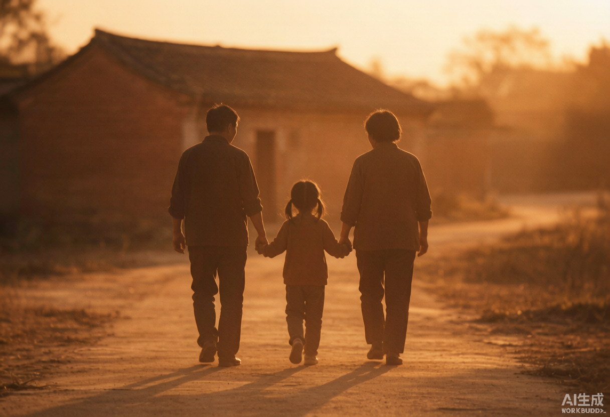
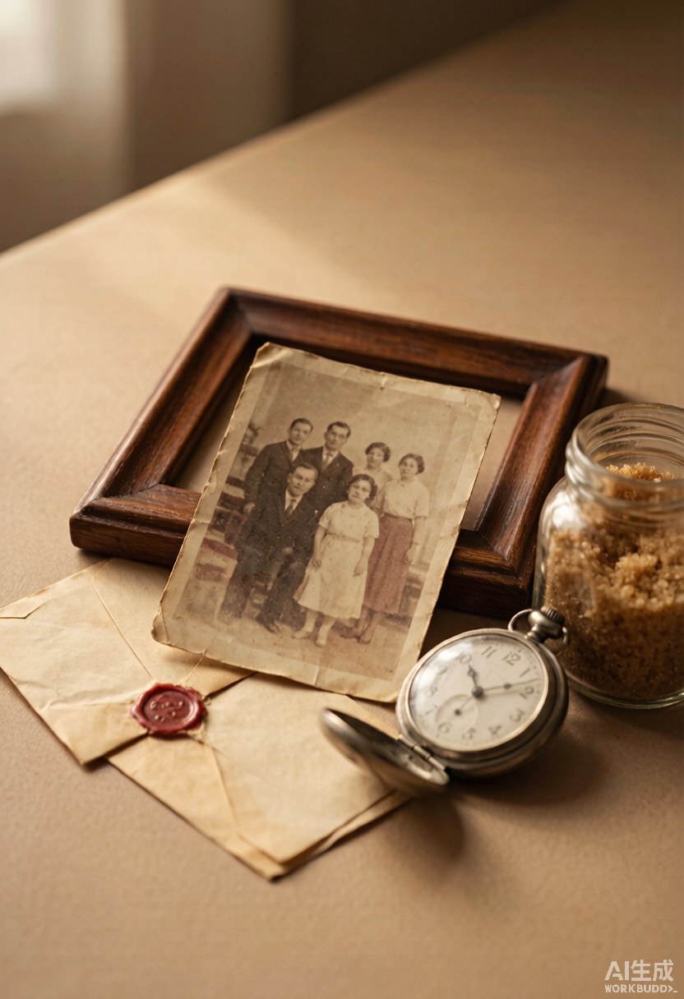

传统记录方式
想留下，往往无从开始
- 靠人临时回想细节随时间不断模糊
- 照片、录音各自散落很难还原完整人生脉络
- 一次长时间访谈准备困难，长辈也容易疲惫
- 写作门槛与成本较高普通家庭很难持续完成
- 总想着以后再做一些声音从此没有留下
- 资料多次转交隐私、版本和归属难以管理
AI ECHO BOOK
爱 · 回音 · 记录
一键启动小程序，搭载自家庭记忆专用自研 AI 大语言模型，照片、语音、文字，一键开始记录
01 / 初心
02 / A STORY BEGINS WITH AN OBJECT
“我记得外公的烤茶罐子，也记得佝偻着身子的外婆，在火塘边用一口小黑铁锅炒鸡蛋招待我。”
03 / MOMENTS THAT REMAIN
“母亲后来告诉我，当时若不是院长赶来救产，你可能就来不到这个世界。”
M同学 · 出生故事
“父亲走后，我在他的旧抽屉里找到一张从未寄出的汇款单，才知道那几年他一直悄悄接济着家乡的弟弟。”
张先生 · 概念样章
“母亲总说自己没什么好讲。直到看见那张车票，她才说起十九岁那年，一个人坐了三天火车去参加工作的故事。”
赵女士 · 概念样章
04 / A NEW WAY TO REMEMBER
传统记录方式
AI 回音录 · 新一代家庭记录方式
05 / PROFESSIONAL INTELLIGENCE
回音录将照片理解、人物访谈、家庭关系梳理与专业写作融入同一套内容系统。从一张照片中寻找线索，从一次讲述中继续追问，再由人生整理师和专业写作者核实、编辑并完成作品。
上传一张照片、一段语音或一件旧物。
识别人物、场景、文字和时代线索。
沿着细节补全人物关系与人生时间线。
生成原声自述、纪实旁白和家庭故事样稿。
写作者核实事实、整理结构并完成编辑。
家人确认后，形成故事、原声与家庭书册。
OUR EDITORIAL TEAM
我们的核心团队横跨中文、历史、新媒体与 AI 系统建设，共同完成访谈、资料梳理、叙事编辑与内容把关。
叙事内容担当
中国传媒大学 · 网络与新媒体
擅长从人物口述和生活细节中提炼故事线，将真实经历转化为清晰、有画面感的内容。

文字创作担当
云南财经大学 · 汉语言文学
关注语言的节奏与人物的真实语气，擅长口述内容整理、纪实叙事与文字润饰。

人文研究担当
云南大学 · 历史学
擅长梳理人生时间线、家庭关系与时代背景，让个人记忆在准确脉络中被理解和保存。

AI 技术架构担当
-
负责大语言模型、照片理解、语音转写与内容工作流的系统设计，让 AI 服务于真实记录与人工创作。
06 / WHAT REMAINS
将零散口述整理成完整篇章，保留主人公的语气、性格与人生脉络。
保存方言、停顿、笑声与熟悉的声音，让家人多年以后仍能再次听见。
把故事、老照片和人生时间线设计装订成册，成为生日、纪念日与家庭传承的珍贵礼物。
亲友可以共同补充照片与回忆，持续沉淀一个家庭的来处、关系与精神记忆。


07 / TWO WAYS TO BEGIN
轻量体验
提交一张照片、一件旧物或回答一个问题，完成第一次故事体验。
深度定制
通过远程或线下深度访谈，完整整理人生时间线、家庭故事与影像资料。
CHOOSE YOUR PLAN
10 / QUESTIONS
可以。问题从具体的人、物件和生活场景开始，不要求长辈一次完整讲述。文字、语音和家人代为补充都可以。
不需要先整理完整资料。一张照片、一件旧物甚至一句记得的话，都可以成为第一个故事的入口。
可以。先完成一次轻量体验，满意以后再加入持续记录计划或升级完整人生作品。
可以。阶段故事与正式交付内容都会设置确认节点，服务范围内的修改方式将在下单前说明。
不会默认公开。案例展示、传播和对外使用都需要单独获得本人或家人的明确授权。